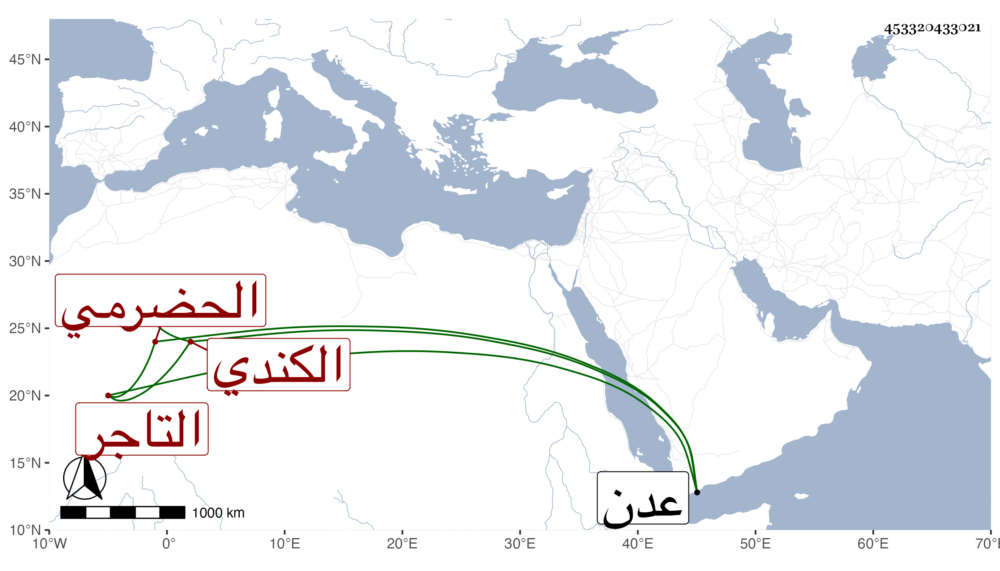

0902Sakhawi.DawLamic.ITO20230111-ara1.EIS1600.453320433021
Biography ID: 453320433021
273
محمد بن أحمد الجمال أبا حنان الحضرمي الكندي التاجر بثغر عدن . كان كثير الأموال جدا متسع الأحوال ومع ذلك فكان غاية في التواضع والتقلل وخشونة الملبس بحيث كان خدمه يلبسون الثياب الفاخرة وهو لا يلبس إلا البياض من القطن ولم يحبس غريما قط ولا رفعه لحاكم ، ومحاسنه كثيرة ، ومما يدل بعظيم أمواله أنهم حسبوا ما كان له في جهة الحبشة خاصة من القماش فكان عبارة عن مائتي ألف دينار وثلاثين ألف دينار . مات سنة ست وخمسين وسيأتي له ذكر في محمد بن عبد الرحمن .
